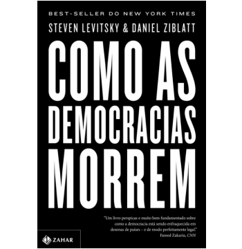

Para uma leitura que cabe no seu bolso escolha Book Stone
Lançamentos
Como As Democracias Morrem
Uma análise crua e perturbadora do fim das democracias em todo o mundo Democracias tradicionais entram em colapso? Essa é a questão que Steven Levitsky e Daniel Ziblatt - dois conceituados professores de Harvard - respondem ao discutir o modo como a eleição de Donald Trump se tornou possível. Para isso comparam o caso de Trump com exemplos históricos de rompimento da democracia nos últimos cem anos: da ascensão de Hitler e Mussolini nos anos 1930 à atual onda populista de extrema-direita na Europa, passando pelas ditaduras militares da América Latina dos anos 1970. E alertam: a democracia atualmente não termina com uma ruptura violenta nos moldes de uma revolução ou de um golpe militar; agora, a escalada do autoritarismo se dá com o enfraquecimento lento e constante de instituições críticas - como o judiciário e a imprensa - e a erosão gradual de normas políticas de longa data. Sucesso de público e de crítica nos Estados Unidos e na Europa, esta é uma obra fundamental para o momento conturbado que vivemos no Brasil e em boa parte do mundo e um guia indispensável para manter e recuperar democracias ameaçadas.
Garota Exemplar
 O livro começa no dia do quinto aniversário de casamento de Nick e Amy Dunne, quando a linda e inteligente esposa de Nick desaparece da casa deles às margens do rio Mississippi. Sinais indicam que se trata de um sequestro violento e Nick rapidamente se torna o principal suspeito. Sob pressão da polícia, da mídia e dos ferozmente amorosos pais de Amy, Nick desfia uma série interminável de mentiras, meias verdades e comportamento inapropriado. Ele é evasivo e amargo — mas seria um assassino? Ao mesmo tempo, passagens
do diário de Amy revelam um casamento tumultuado — mas ela estaria contando toda a história?
Alternando entre os pontos de vista de Nick e Amy, Flynn cria uma aura de dúvidas em que o cenário muda a cada capítulo. À medida que as revelações surgem, fica claro que, se existe alguma verdade nos discursos de Nick e Amy, ela é mais sombria, distorcida e assustadora do que podemos imaginar. Magistralmente bem construído do início ao fim, Garota exemplar é um daqueles livros impossíveis de largar e sobre o qual se quer debater assim que a leitura termina.
O livro começa no dia do quinto aniversário de casamento de Nick e Amy Dunne, quando a linda e inteligente esposa de Nick desaparece da casa deles às margens do rio Mississippi. Sinais indicam que se trata de um sequestro violento e Nick rapidamente se torna o principal suspeito. Sob pressão da polícia, da mídia e dos ferozmente amorosos pais de Amy, Nick desfia uma série interminável de mentiras, meias verdades e comportamento inapropriado. Ele é evasivo e amargo — mas seria um assassino? Ao mesmo tempo, passagens
do diário de Amy revelam um casamento tumultuado — mas ela estaria contando toda a história?
Alternando entre os pontos de vista de Nick e Amy, Flynn cria uma aura de dúvidas em que o cenário muda a cada capítulo. À medida que as revelações surgem, fica claro que, se existe alguma verdade nos discursos de Nick e Amy, ela é mais sombria, distorcida e assustadora do que podemos imaginar. Magistralmente bem construído do início ao fim, Garota exemplar é um daqueles livros impossíveis de largar e sobre o qual se quer debater assim que a leitura termina.
Relíquias
A descoberta de que uma múmia conhecida como Madame X esconde na verdade o corpo de uma mulher assassinada há pouco tempo choca a comunidade arqueológica. A detetive Jane Rizzoli e a patologista Maura Isle se unem novamente para resolver o mistério. Elas se deparam com um assassino em série que simula rituais de povos antigos com suas vítimas, transformando seus corpos em verdadeiras relíquias. E, para complicar, ele parece ter desenvolvido uma fixação com uma jovem egiptóloga, Josephine Pulcillo, cujo passado misterioso pode ser a chave para as investigadoras encontrarem o criminoso.